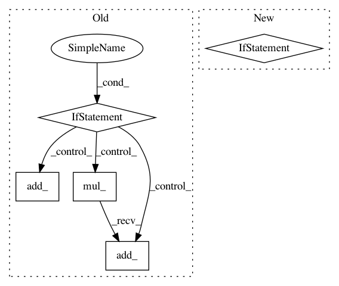

86ac9b94f772382087b4f92ebe0625173dfa314c,gpytorch/utils/linear_cg.py,,linear_cg,#Any#Any#Any#Any#Any#Any#Any#Any#Any#,11
Before Change
// If residual are sufficiently small, then exit loop
// Alternatively, exit if this is our last iteration
torch.norm(residual, 2, dim=-2, out=residual_norm)
if (residual_norm < tolerance).all() and not (n_tridiag and k < n_tridiag_iter):
break
// Update precond_residual
// precon_residual{k} = M^-1 residual_{k}
precond_residual = preconditioner(residual)
// beta_{k} = (precon_residual{k}^T r_vec_{k}) / (precon_residual{k-1}^T r_vec_{k-1})
residual_inner_prod.add_(eps)
torch.reciprocal(residual_inner_prod, out=beta)
torch.mul(residual, precond_residual, out=mul_storage)
torch.sum(mul_storage, -2, keepdim=True, out=residual_inner_prod)
beta.mul_(residual_inner_prod)
// Update curr_conjugate_vec
// curr_conjugate_vec_{k} = precon_residual{k} + beta_{k} curr_conjugate_vec_{k-1}
curr_conjugate_vec.mul_(beta).add_(precond_residual)
// Update tridiagonal matrices, if applicable
if n_tridiag and k < n_tridiag_iter and update_tridiag:
alpha_tridiag = alpha.squeeze_(-2).narrow(-1, 0, n_tridiag)
After Change
// Get next alpha
// alpha_{k} = (residual_{k-1}^T precon_residual{k-1}) / (p_vec_{k-1}^T mat p_vec_{k-1})
mvms = matmul_closure(curr_conjugate_vec)
if not no_precond:
torch.mul(curr_conjugate_vec, mvms, out=mul_storage)
torch.sum(mul_storage, -2, keepdim=True, out=alpha)
alpha.add_(eps)
torch.div(residual_inner_prod, alpha, out=alpha)
// Update residual
// residual_{k} = residual_{k-1} - alpha_{k} mat p_vec_{k-1}
torch.addcmul(residual, -1, alpha, mvms, out=residual)
// Update precond_residual
// precon_residual{k} = M^-1 residual_{k}
precond_residual = preconditioner(residual)
_jit_linear_cg_updates(
result,
alpha,
residual_inner_prod,
torch.tensor(eps),
beta,
residual,
precond_residual,
mul_storage,
curr_conjugate_vec,
)
else:
_jit_linear_cg_updates_no_precond(
mvms,
result,
alpha,
residual_inner_prod,
torch.tensor(eps),
beta,
residual,
precond_residual,
mul_storage,
curr_conjugate_vec,
)
// // if (residual_norm < tolerance).all() and not (n_tridiag and k < n_tridiag_iter):
// // break
// Update tridiagonal matrices, if applicable
if n_tridiag and k < n_tridiag_iter and update_tridiag:
alpha_tridiag = alpha.squeeze_(-2).narrow(-1, 0, n_tridiag)
beta_tridiag = beta.squeeze_(-2).narrow(-1, 0, n_tridiag)
torch.reciprocal(alpha_tridiag, out=alpha_reciprocal)
In pattern: SUPERPATTERN
Frequency: 3
Non-data size: 5
Instances
Project Name: cornellius-gp/gpytorch
Commit Name: 86ac9b94f772382087b4f92ebe0625173dfa314c
Time: 2019-01-23
Author: gardner.jake@gmail.com
File Name: gpytorch/utils/linear_cg.py
Class Name:
Method Name: linear_cg
Project Name: pytorch/pytorch
Commit Name: a0cf5566d88533c5caa7a490beb6eb0760eee9b4
Time: 2021-01-21
Author: wanchaol@users.noreply.github.com
File Name: torch/optim/sgd.py
Class Name: SGD
Method Name: step
Project Name: cornellius-gp/gpytorch
Commit Name: a1e8bcc26a4b432776620b242023adb7acf206e3
Time: 2019-01-27
Author: gardner.jake@gmail.com
File Name: gpytorch/utils/linear_cg.py
Class Name:
Method Name: linear_cg